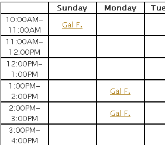
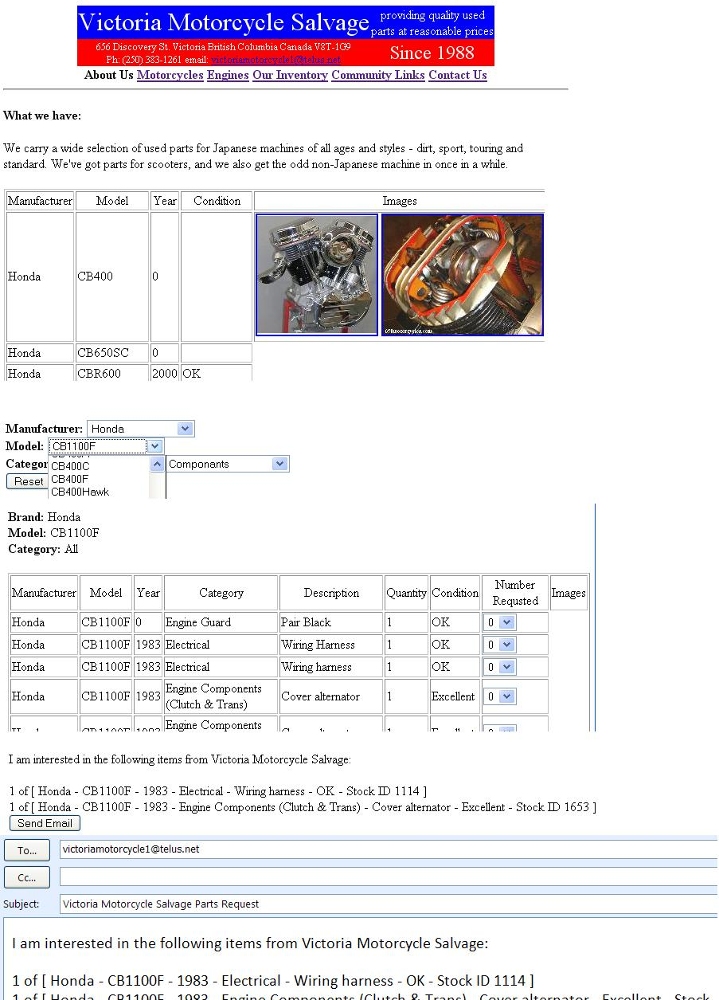
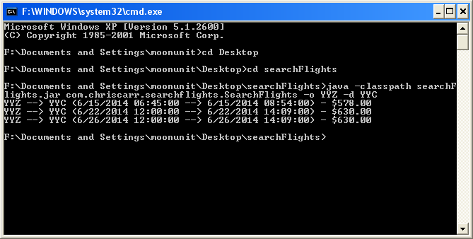

Christopher Gordon Carr's Software Developer Portfolio
I have created all of this software. It is free to download and modify. I appreciate all suggestions. I am always open to requests for projects or modifications of my code.
I have been a professional software developer for 8 years. I have worked at British Columbia Minsitry of Education, 6th Dimension Devices, Selkirk Systems: Wildfire and Emergency Management Software, Beanstream: Electronic Payment Processing, Arius Software: Account Opening Software for Financial Firms, Well.ca: ecommerce, Mobile WRX, Tulip Retail. I have also done computer service, toutoring, contracting, startup partnerships and volunteering.
I live in Kitchener Ontario. I attend local Peer2Peer groups(Lean/Agile/Mobile) and Techworking Breakfast through Communitech, UXWaterloo, Guelph PHP Users Group and frequent the monthly Startup Drinks sessions, KW Android Developers meetup.
I am currently seeking employment as a Software Developer. I am always open to oportunites for employment/contracting or a partnership.
I have a passion for creating quality software. I am always reading books to improve my skills. My favorite books: Ship-it!, Code Complete, Pragmatic Programmer, Peopleware, Mythical Man Month, The Psychology of Computer Programming, Don't Make Me Think, Founders at Work. I am currently reading: Software Craftsmanship.
Languages I have used: Java, C++, Perl, PHP, JavaScript, VB6, VB.Net, C#, XML, SQL, PL-SQL, QBasic, Scheme, CRAPS(Sparc clone), C, Batch Scripts, Ruby, Pascal, Python
Web flavours: XHTML, HTML, WML, XSD, XSLT, Soap, AJAX, REST.
Blog: http://christophergordoncarr.wordpress.com
Twitter: https://twitter.com/moonscientist
Linkedin: http://ca.linkedin.com/pub/christopher-carr/24/a79/220
| BASICS web report |
Ongoing contract work to make a daily generated xml report available on a secured web page in a searchable/filterable state. Authentication, Download custom csv, Search, Multi-field search, conversion/importing. Technoligies: PHP, MySql, jQuery, Bootstrap, JavaScript, CSS, HTML |
|  |
Integrated existing scheduling system with web site. Created custom schedule calendar. Duration: 3 1/2 hours. Technologies: JavaScript, jQuery, CSS, HTML |
|  |
Victoria Motorcycle Salvage Created web pages for searching inventory via an existing Access parts database. Included images and links to email part requests. Set up local web server. Duration: 13 hours. Technologies: JavaScript, HTML, Access |
Tally and Report |
I created Tally and Report as a volunteer project for the www.coolaid.org society. REES wanted to change a manual paper tally of clients who use their services to a computer based tally. Every 3 months a report is sent off, and every 3 months 90 days worth of clients information needed to be added manually. Duration: 14 hours and 11 revisions. Technologies: Java |
Mobile WRX: Mobile Couponing |
I have created Mobile WRX: Mobile Couponing in a partnership. Mobile WRX will allow you to quickly find and use coupons by scanning a coupon from your phone at retail stores. Mobile WRX features: Favorites, Auto Favorites, Filtering, Text Search, Saved Searches, Browse Categories, Browse All, Profile Management, Login, Registration, QR codes for scanning, Images of products and brands, Retail locations, Similar Coupons. There is also a web based management tool to create and modify coupons. Duration: 50 hours est. Spanning a few years Technologies used: MySQL, Java, JSP, HTML,Javascript. |
User Profile |
Create/Delete a user profile entry system as part of a job application. Duration: 4 hours est. Technologies: PHP, MySQL |
Search Flights |
Created a multi-threaded command line flight search/sort tool as part of a job application. Source/Executable jar searchFlights.zip Duration: 5 hours Technologies: Java, JUnit |
Device Reporting |
Created a command line device reporting tool as part of a job application. devicereporting.zip Duration: 6 hours Technologies: PHP, MySQL, PHPUnit |
GrabOp |
I maintain and add features to GrabOp. Buy, Sell, Trade, Donate services. www.grabop.com Technologies: PHP, MySQL, JavaScript |
| Code 2015 | CODE 2015 Hackathon submissions. Very similar to the grand prize winner. |
| Moon Mirror | A business placing focusable mirrors on the moons surface to increase the ammount of light hitting the earth at night. |
| House Minder | A bonded insured person stays at your house for a few hours to let a service worker in, or accept a package, allowing you to stay at work, or do other things. |
Snack Tracker |
Created an IOU management system for the office store I ran at Well.ca/Tulip. |
Squalid Salad - CODE 2014 |
CODE 2014 hackathon. I came in the top 15 in a Government sposored Canada wide coding challege. I did this hackathon solo over 48 hours. I got to present at the finals in Toronto. This app uses the governments open api data from children's hospitals and combines it with saftey data. |
Movie Tickles - MasterCard |
I was on the team that won the $10,000 professional prize at the MasterCard NXT Coding Challege. I worked on the API and the integration with the MasterCard Payment API. |
Deck of cards |
I want to design a very fast way to put board games on the web. My goal is a minimalistic no rules interface. At the moment it is a deck of cards. Double click to flip cards. Drag to move cards. Drag select to select multiple cards. Icons to shuffle, stack and flip selected cards. Refresh the page for a new deck. My plan is to add private and public areas(You can only see your poker hand), rolling dice(likely double click to roll). To create a new game, you would need pictures of the front and back of game elements and an inital layout. Shared checkers shares the locations of the pieces to all browsers visiting the page, and updates every second. |
Kutafuta |
Kijiji Abratrage - for sortable hackday. Made with a team of 4. |
Amazing Labyrinth Clone |
I created Labyrinth as an experiment in path finding. I created a Facebook version during Facebook Hack Toronto 2012. I intend to make a multiplayer web version. |
Kraplow! |
I created Text Kraplow! as an experiment to see if I can get all the rules of a western card game into software. Kraplow! Uses HTML and AJAX. |
Boggle Clone |
I created Bungle to demonstrate a simple internet game that doesn't required Java or downloading anything. |
Tetris Clone |
I created Stacking Blocks because a "How to become a game developer" recomended it as a good start. |
Jacks or Better Video Poker Clone |
I created Video Poker as a chalange to myself to start on the way to online multiplayer games, specifially a western card game. |
AJAX Chat |
I created AJAX Chat to experiment with AJAX with an end goal of converting some games I have made to AJAX games that include a chat component. |
Numerical Browsing Assistant |
Turn any photo/page series into a slide show. |
Jpg Batch Tool |
I created Jpg Batch Tools to quickly create thumbnails and html galleries of hundereds of images and folders. |
HTTP Sequence Downloader |
I created Sequence Downloader to get around browser download limitations of 3 files downloading at a time. |
Bilge Clone |
I created Float Game as an experiment. I was inspired by the bilge game in Puzzle Pirates. |